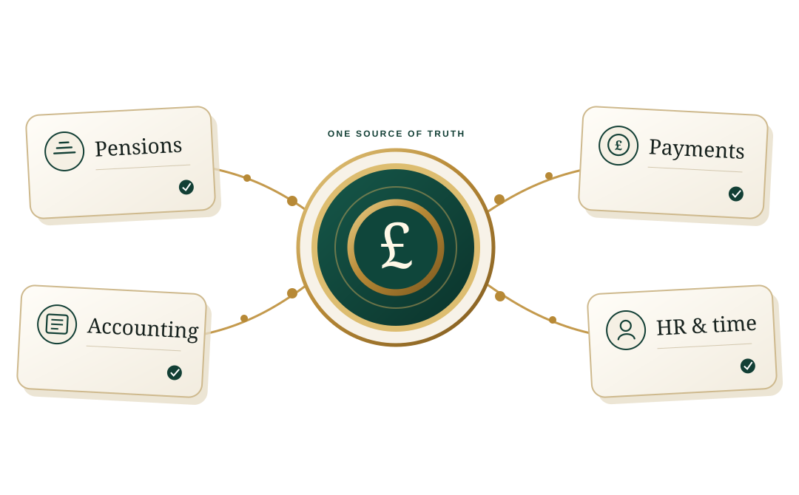

Data keyed in twice
Pension and journal figures re-typed between platforms, each entry a chance for a mismatch.
Oceans Pay is being built around an open API core designed to connect pension providers, accounting platforms, banking rails and HR tools without a spreadsheet in the middle.
Built for UK payroll bureaux, employers and multi-company teams
Manual hand-offs between systems can introduce duplication, delays and mismatched records.
Pension and journal figures re-typed between platforms, each entry a chance for a mismatch.
Waiting on exports and imports pushes pension and journal deadlines closer to the wire.
Bureau, payroll team and employer can each hold a slightly different version of the same payroll.
Mismatches are usually caught after submission, when correcting them takes far longer.
Oceans Pay connections are being designed to move and validate data through a controlled workflow.
Link a supported pension, accounting or payment provider at bureau or employer level.
Validate figures against the payroll run before information is sent onward.
Send contributions, journals and payment instructions in the supported provider format.
Record provider responses so teams can review the resulting status and exceptions.
A documented REST API and webhooks are part of the Oceans Pay development roadmap, with the aim of supporting existing HR systems, time-tracking tools and in-house reporting.
GET /v1/payroll-runs/:id
POST /v1/pension/submit
POST /v1/journals/xero
GET /v1/webhooks/events
200 OK · reconciled
Oceans Pay is in active development. Here's what's in build now, and what's next on the roadmap.
Connection status reflects current build progress and may change as Oceans Pay moves through MVP and pilot phases. Named providers are integration targets, not confirmed partnerships, unless stated otherwise.
Connections are designed around encryption, authenticated access and controlled handling of payroll information. Technical standards will be confirmed before launch.
Production hosting, resilience and data-location details will be published once the technical architecture and contractual position are confirmed.
A full audit trail of what was sent, to which provider, and when it was confirmed.
Book a demo and we'll walk through how Oceans Pay's connections fit around your existing pension, accounting and payment providers.